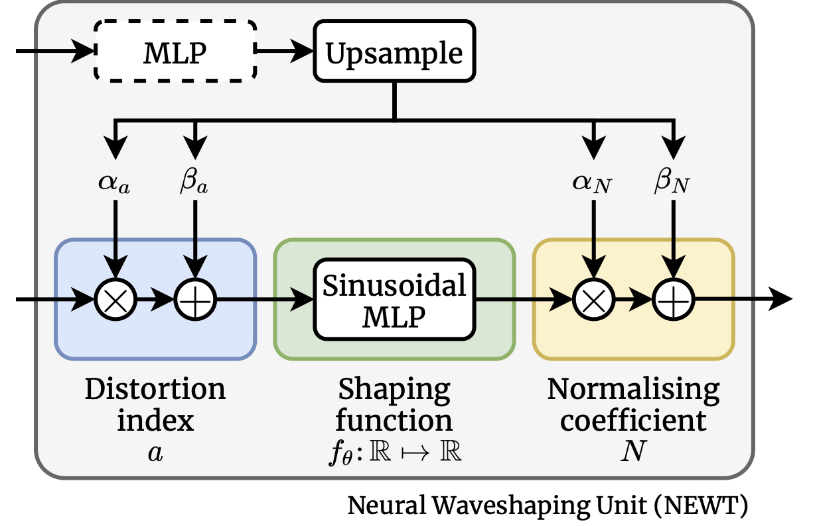
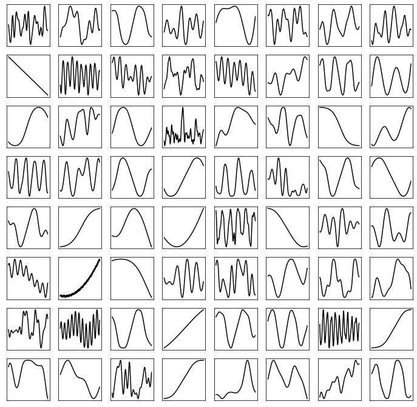
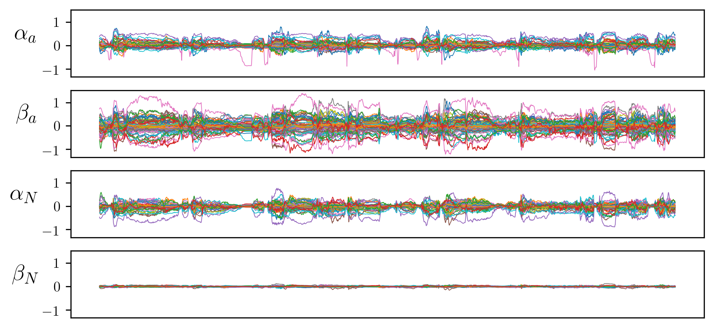
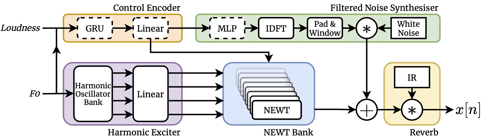
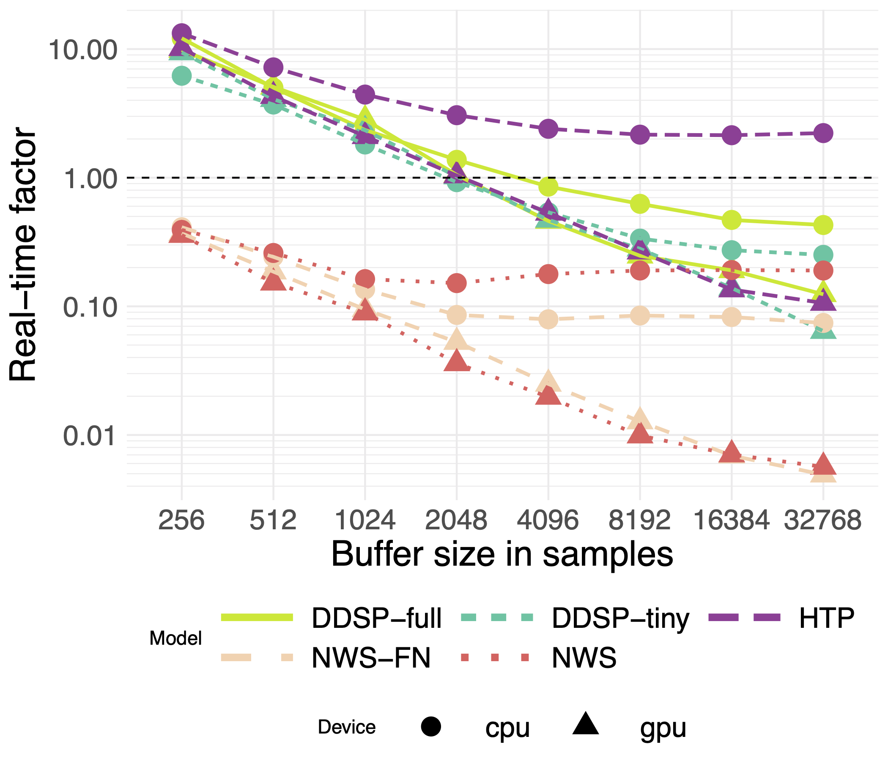

Neural waveshaping synthesis
Ben Hayes, Charalampos Saitis, György Fazekas. ISMIR 2021. Paper, code, Colab, audio examples.
We’re excited to present our work on Neural Waveshaping Synthesis, a method for efficiently synthesising audio waveforms with neural networks. Our approach adds to the growing family of differentiable digital signal processing (DDSP) 1 methods by learning waveshaping functions with neural networks.
This page is a supplement to our paper, accepted for publication at ISMIR 2021.
What is waveshaping synthesis?
Musical audio often has a harmonic structure. In other words, it consists of multiple components oscillating at integer multiples of a single fundamental frequency, called harmonics. Many audio synthesis methods focus on producing such harmonics, and waveshaping synthesis 2 is one of these approaches.
In brief, we take a simple sinusoid, , and we pass it through a nonlinear function, which produces a sum of harmonics of that sinusoid:
This is the principle of harmonic distortion, and by designing an appropriate function we can produce any combination of harmonics we require. Note: this is a big simplification! We are assuming ideal conditions — in practice, aliasing means the resulting signal is often more complex.
If we apply to a more complex signal, , we encouter a phenomenon called intermodulation distortion, which produces frequencies at , for input frequencies and . This means when is purely harmonic, will be too.
With this knowledge, we can produce a steady signal consisting of multiple harmonics. If we want to vary the timbre over time, we can change the amplitude of the signal we pass into . We do this using the distortion index . We also introduce the normalising coefficient which allows us to vary the timbre separately from the amplitude of the final signal. Putting all this together, we can define a simple waveshaping synthesiser:
As you might have guessed, the tricky part here is choosing the function . In Marc Le Brun’s original formulation2, the function is defined as a sum of Chebyshev polynomials of the first kind, giving a precise combination of harmonics when .
But what happens when we vary ? As we know, the balance of harmonics also varies, but with the Chebyshev polynomial design method we have no control over this variation. This means if we want to model the temporal evolution of a specific target timbre, we’re out of luck!
Or are we?
NEWT: the neural waveshaping unit
The NEWT is a neural network structure that performs waveshaping on an exciter signal. Instead of manually designing our shaping function , however, the NEWT learns it from unlabelled audio. In particular, the NEWT learns an implicit neural representation3 of the shaping function using a sinusoidal multi-layer perceptron (MLP). And it turns out that we can get good results using tiny MLPs to represent our shaping functions – only 169 parameters each!

The NEWT also learns to shift and scale the input and output of the shaping function in response to a control signal. This allows a trained NEWT to ‘’play’’ the waveshaper just like the distortion index and normalising coefficient in the waveshaping synthesiser we defined above. In practice we use multiple NEWTs in parallel – 64, to be precise – and they share an MLP to generate these affine parameters from the control signal.
So what does the NEWT actually learn? How do we know that the NEWTs aren’t just learning to attenuate the harmonic exciter signal? Well, we can visualise the shaping functions learnt by our model by simply sampling across their domain. The following figure plots the shaping functions learnt by the sinusoidal MLPs in each NEWT in our violin model sampled across the interval .

Clearly, the NEWTs learn a wide variety of shaping functions from the data.
But couldn’t the model simply shift and scale the exciter signal to only utilise a locally linear region of the shaping function? This seems like a very real possibility! So, let’s inspect the affine parameters generated by our model whilst performing timbre transfer on a ~20 second long audio clip (the first row in our timbre transfer examples below). This next figure plots these parameters for every one of the 64 NEWTs, again using the violin model.

The model clearly makes use of , , and , varying many of these parameters widely across the length of the audio clip. However, is barely varied at all. This tells us that it has learnt to continuously shift and scale the input to the shaper functions, and also scale the output, whilst leaving the DC offset of the output signal almost untouched. It is also interesting to note that many affine parameters seem highly correlated, whilst a few appear to move independently, suggesting that some NEWTs may work together to produce cohesive aspects of the signal, whilst others take momentary individual responsibility for signal components.
Whilst it’s possible to imagine what effect the affine parameter might have on a signal — it simply changes the amplitude — it’s harder to get a sense of how and might change things. Do they result in any meaningful distortion? As the NEWT operates at audio rate, we can simply listen to the output of the shaping function to find out! Here, we have randomly selected a NEWT (index 26 in our violin model), and used the corresponding and plotted above. To make the effect of the NEWT clear, we have simply fed it with a steady sine wave at 250 Hz, so all the variation you hear in the sound is caused by the affine parameters and shaping function. On the left, you can listen to the sine wave input, and on the right you can listen to what the NEWT does to this signal! You might want to turn your speakers down before listening – these are not pleasant sounds.
As you can hear, this shaper combined with the affine parameters generated from real control signals results in very distinct changes to the harmonic content of the exciter signal. This tells us that the NEWT does indeed learn to manipulate the harmonic content of the exciter signal.
Bringing it all together
We use the bank of 64 NEWTs in the context of a differentiable harmonic-plus-noise synthesiser, very much like the one used in the DDSP autoencoder1. In our model, however, rather than directly generating harmonic amplitudes with a recurrent decoder, the NEWTs learn shaping functions which encode particular harmonic profiles and evolutions. The sequence model then generates affine transform parameters which utilise these shapers to generate timbres.
As well as the NEWT bank, our model contains two further differentiable signal processors: a learnable convolution reverb, and a filtered noise synthesiser which contributes aperiodic components to the final signal.

This architecture uses just 266,000 trainable parameters, and learns from just minutes of unlabelled audio! As with other recent models in the DDSP family, such as Engel, et al.’s differentiable additive synthesiser1 and Wang, et al.’s differentiable source-filter model4, our model exploits a strong inductive bias towards the generation of periodic signals with a harmonic structure.
Why this approach?
You may be wondering why, with so many successful recent approaches to monophonic neural audio synthesis, would you choose to use our proposed method? Bluntly, the answer is efficiency.
Real-time performance is critical for practical use in sound design and music production applications, and existing models are typically very large. Some do just about manage to achieve real-time performance (e.g. see Antoine Caillon’s excellent real-time implementation of the DDSP autoencoder), but this typically requires big compromises in the model architecture, a GPU, and/or impractical buffer sizes. Our approach, on the other hand, comfortably achieves real-time performance at a number of reasonable buffer sizes on both GPU and CPU.

How does it do this? Our baseline NEWT implementation takes advantage of the ability to parallelise grouped 1D convolutions across a sequence. This alone allows very efficient generation, but we further improve CPU performance with an optimisation called the FastNEWT. In brief, this involves sampling the domain of the NEWT’s shaping function and replacing it with a lookup table, thus replacing the forward pass through each sinusoidal MLP with the operation of an array lookup. In listening tests and quantitative evaluation, we found this optimisation has no significant effect on synthesis quality!
Audio examples
So how does it sound? We have collected a variety of audio examples here to help you make up your own mind!
Resynthesis
In these examples, we extracted F0 and loudness control signals from the corresponding test dataset. We then fed these through the model to generate audio. We also provide outputs from a DDSP-tiny model trained on the same data for comparison.
Flute
Trumpet
Violin
Timbre transfer
In these examples, we extracted F0 and loudness control signals from monophonic audio from an entirely different timbral domain – in this case, vocal stems. We then fed these through the model to generate audio which retains the pitch and loudness from the source audio whilst the timbre is generated by the model.
References
- J. Engel, L. H. Hantrakul, C. Gu, and A. Roberts, “DDSP: Differentiable Digital Signal Processing,” in 8th International Conference on Learning Representations, Addis Ababa, Ethiopia, 2020.
- M. Le Brun, “Digital Waveshaping Synthesis,” Journal of the Audio Engineering Society, vol. 27, no. 4, pp. 250–266, Apr. 1979.
- V. Sitzmann, J. N. P. Martel, A. W. Bergman, D. B. Lindell, and G. Wetzstein, “Implicit Neural Representations with Periodic Activation Functions,” arXiv:2006.09661 [cs, eess], Jun. 2020.
- X. Wang, S. Takaki, and J. Yamagishi, “Neural Source-Filter Waveform Models for Statistical Parametric Speech Synthesis,” IEEE/ACM Transactions on Audio, Speech, and Language Processing, vol. 28, pp. 402–415, 2020.